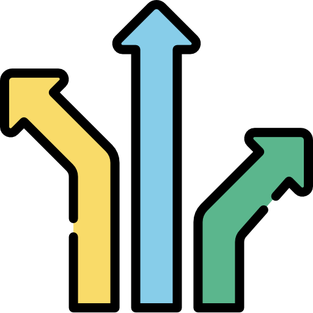
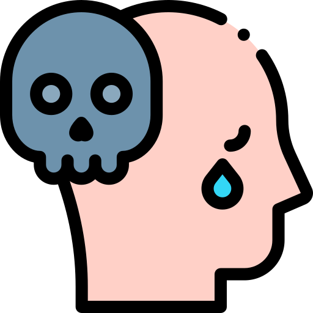
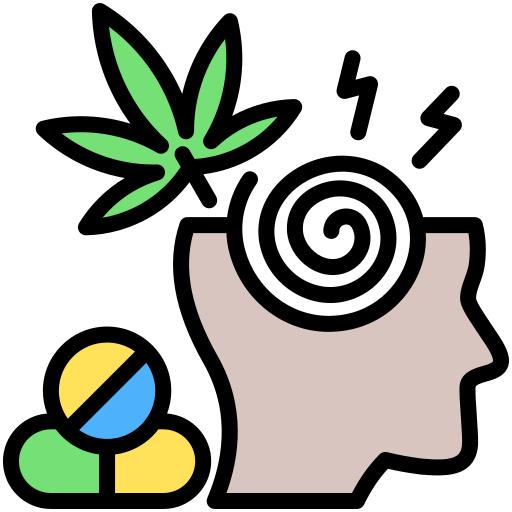
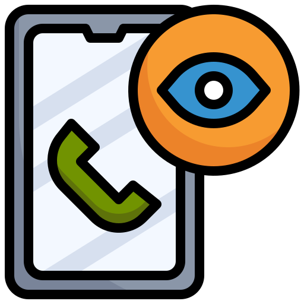

+263772761943
seanmarime@gmail.com
Mon-Sat 9:00-19:00
Therapy that heals
My name is Panashe Sean Marime, and I am Zimbabwe’s first and only licensed sight-impaired counseling psychologist. People often ask me how my blindness affects my work. My answer is simple: It allows me to listen with a depth that goes beyond the surface. When you sit with me at My Confidant, I am not distracted by what you look like or the clothes you wear. I am focused entirely on your voice, your emotions, and the truth of your story.
Living with a visual impairment has taught me more about resilience, adaptation, and 'transition' than any textbook ever could. I know what it feels like to navigate a world that wasn't always built for you.
That is why I have dedicated my life to helping others navigate their own internal landscapes—especially those dealing with trauma, addiction, grief, and suicidal ideation.
At my practice in Chisipite, or through our telehealth sessions, the philosophy is simple: You matter. Whether we are working through deep psychological wounds or I am training you on digital accessibility tools to reclaim your independence, my goal is the same—to help you rejuvenate and find your way forward.
I may not see you with my eyes, but I hear you, I understand you, and I am here to be your confidant.
As your Confidant, I provide the specialized support and practical tools you need to move from pain to rejuvenation.

As Zimbabwe’s first licensed sight-impaired counseling psychologist, I offer a therapy experience free from visual bias. My focus is entirely on your voice, your tone, and your spoken truth. This allows for a deeper, more intuitive connection where you are truly heard, not just seen.

I specialize in the areas that require the most delicate care: Trauma, Suicidal Ideation, and Grief. I provide a stabilized, professional environment to help you process deep wounds and find the path back to yourself.

Overcoming dependency requires a confidant who understands the psychology of habits and the pain of transition. I offer evidence-based counseling to support your journey toward long-term sobriety and mental clarity.

I don’t just offer emotional support; I offer practical tools for independence. I provide specialized training in Digital Accessibility Tools, helping the blind and visually impaired community navigate the modern world with confidence.
I provide a safe, impartial space to navigate the complexities of daily life. From managing depression and anxiety to working through grief and loss, my goal is to help you find clarity and emotional stability. Whether in person at my Chisipite clinic or via TeleHealth, we focus on your personal rejuvenation and growth.
Get in TouchTrauma and suicidal ideation require a delicate, expert approach. I specialize in trauma-informed counseling, helping you process deep-seated wounds and develop the resilience needed to move forward. As your confidant, I am here to support you through your most difficult transitions with empathy and professional care.
Get In TouchIndependence is a vital part of mental well-being for the blind and visually impaired. I provide expert training in Digital Accessibility Tools, empowering you to navigate technology and the modern world with confidence. This service is designed to turn barriers into bridges, ensuring you have the practical skills to thrive.
Get In TouchYour Story Deserves to be Heard!
Zimbabwe’s first licensed sight-impaired Counseling Psychologist, providing a unique perspective on healing.
seanmarime@gmail.com
+263772761943
Copyright @MyConfidant | Designed by Loom Web Agency